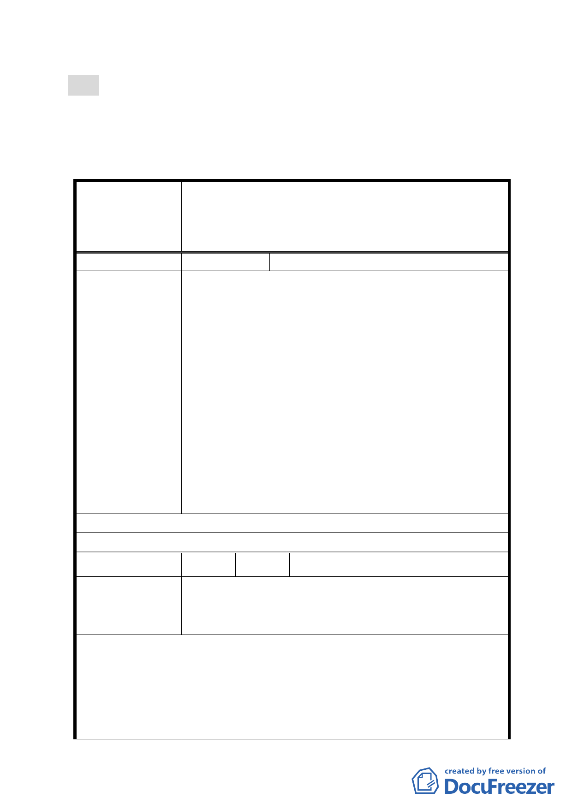

號函送修正後計畫書到會，提請委員會續審。
決議：
一、本案不予通過。
二、公民或團體所提意見審決如後附綜理表。
臺北市都市計畫委員會公民或團體所提意見綜理表
修訂「臺北市基隆河（中山橋至成美橋段）附近地區細
案 名 部計畫娛樂區（供娛樂購物中心使用）街廓編號 B2 基
地（中山區金泰段 16-4 地號）土地使用分區管制規定
與都市設計管制要點」計畫案
編 號 1 陳情人 楊永東、林議員瑞圖
98.10.13 台北市議會市民服務中心協調楊永東君等陳
情案「為促進都市再生 2010 年臺北好好看執行疑義」
會議結論：
一、本案請都發局依 98 年 8 月 31 日北市都規字第
09835667000 號函依法辦理，否則就有「官商勾
結」、「市府與建商聯合詐欺」之嫌，請政風處詳加
陳情理由
調查，並於文到 15 日內以正式公函回覆本席及陳
情人。
二、請都委會嚴格把關，並將本案內情詳細轉知林副市
長及全體都委會委員，並發文通知本席參加都委會
會議。
三、本案為避免市府有圖利財團及為財團利益量身訂作
「台北好好看」之嫌，請都發展暫緩將本案移至都
委會審理。
建 議 辦 法 （同上）
委員會決議
本案不予通過。
編號
2 陳情人 陳議員玉梅
目前大彎北段商業區之建物使用現況，大多違規作為
陳 情 理 由 住宅使用。大彎北段之商業區、娛樂區已有部分土地依
現行之法令完成開發建築。
為避免都市計畫變更公告實施後，造成未來有更大量之
違規使用情事發生，故建議地上 1 至 3 層樓維持商業使
建 議 辦 法 用，地上 4 層樓以上開放作為住宅使用，住宅使用比例
≦2/3 總容積，高度限制以不阻擋河岸景觀，及免辦環
境影響評估審查之 70 公尺為原則。為避免不切現況發
展，建議取消「街廓 A1、A2、B1、B2 街廓內臨接退
- 32 -